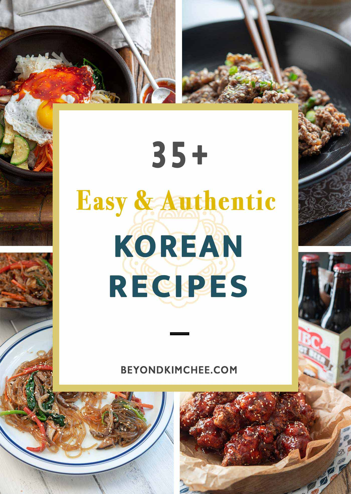

Recipes For Meal Preps
By: Jae Yun
The following list of recipes are recipes for some popular korean foods. They are widely popular dishes that is cooked in a typical Korean household.
Korean Soybean Paste Stew Recipe
Korean BBQ Pork Belly Recipe
Korean Beef Bowl Recipe